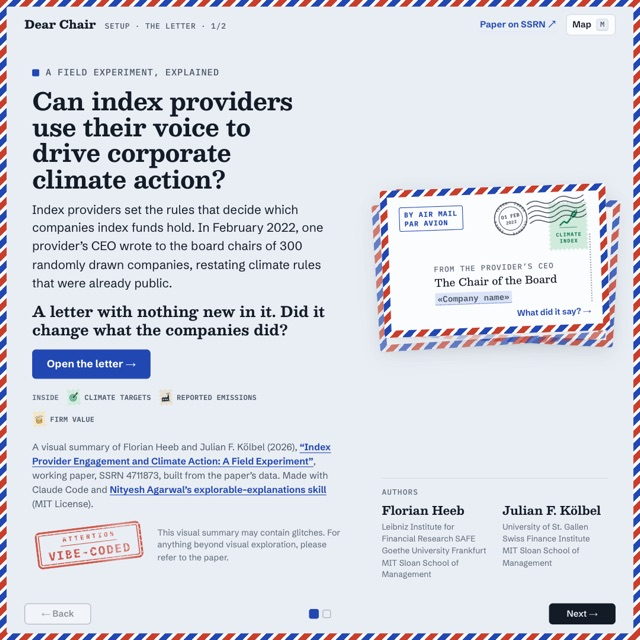

I am an Assistant Professor of Sustainable Finance and the UniCredit Foundation Fellow at Leibniz Institute for Financial Research SAFE and Goethe University Frankfurt. I study the real-world impact of sustainable investing and how investors integrate sustainability into their decision-making.
Research
Publications
-
Green Investing and Political Behavior (opens in a new tab)
The opportunity to invest in green funds does not reduce individuals' support for climate regulation.
-
Do Investors Care About Impact? (opens in a new tab)
Editor's Choice and lead article · FIR-PRI Finance & Sustainability Award for Best Published Article
Investors are willing to pay for investments with impact, but they do not pay more for greater impact.
-
Policy impact: cited in the draft EU Ecolabel Criteria for Retail Financial Products
Literature review on the impact of sustainable investing, distinguishing between company impact and investor impact.
Working Papers
-
Index Provider Engagement and Climate Action: A Field Experiment (opens in a new tab)
In a field experiment with a global sample of large firms, we show that engagement by an index provider can drive corporate climate action.

A visual exploration of the paper Dear Chair An interactive companion to the paper. Re-deal the 300 letters and watch the paper's 2,000 randomization-inference draws pile up, see the effects on targets and emissions unfold quarter by quarter, and flip robustness switches to try to break the results. Open Dear Chair (opens in a new tab) -
Beliefs About the Climate Impact of Green Investing (opens in a new tab)
Most academic experts do not believe that a typical green fund has a meaningful climate impact; the vast majority of retail investors do.
-
The Market for Voluntary Carbon Offsets (opens in a new tab)
Prices for voluntary carbon credits are highly dispersed and seem not to be primarily driven by their climate impact.
-
The Economic Impact of ESG Ratings (opens in a new tab)
Changes in ESG ratings affect mutual fund holdings and stock returns, but there is no evidence of real-world impact.
-
Mapping Investor Impact: Mechanisms and Moderators
A systematic review of the mechanisms and moderators of investor impact.
Publications in Environmental Sciences
-
Wastewater from the megacity Beijing carries a wide range of organic micropollutants into the downstream rivers used for irrigation.
Practitioner & Policy Writing
- 2025
Integrating investor impact is key to effective sustainability regulation (opens in a new tab)
SAFE Finance Blog
How can the Sustainable Finance Disclosure Regulation drive real impact? (opens in a new tab)
With Nikolai Badenhoop, Tatiana Farina & Loriana Pelizzon · SAFE Finance Blog
- 2022
A-B-E-G-L-N: how adding six letters to SFDR can make it 'work' (opens in a new tab)
With Harald Walkate · illuminem
What fake suede and the future of impact investment have to do with one another (opens in a new tab)
With Harald Walkate · illuminem
MiFID misses mark: ESG motivations matter (opens in a new tab)
With Harald Walkate · illuminem
- 2021
Machen nachhaltige Anlagen die Welt besser? (opens in a new tab)
With Julian Kölbel & Falko Paetzold · Die Volkswirtschaft
Does impact need to be measurable to count as impact? (opens in a new tab)
LinkedIn Blog
- 2020
The Investor's Guide to Impact (opens in a new tab)
With Julian Kölbel
ESG ist nicht gleich Impact (opens in a new tab)
With Timo Busch, Sarah Carroux, Julian Kölbel & Falko Paetzold · Absolut Impact
Sustainable Investing Is Booming — But Where Is the Impact? (opens in a new tab)
Milken Institute Review
Teaching
-
since 2025
Sustainable Finance
-
since 2025
Impact Investing
-
since 2026
Sustainable Finance: Impact, Risk, and Compliance